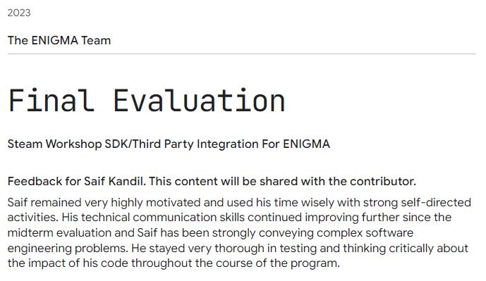

This blog post is related to my Google Summer of Code 2023 project .
Here's my feedback from my mentors after passing the final evaluation:

Overall, I think I did quite well, I learned a lot of interesting things. Maybe, the tricky part in this project was the deployment of the extension. Although the extension is ready for production usage, it only supports Ubuntu Linux for now. This is because ENIGMA is broken on MacOS and semi-broken on Windows at the time of writing this post.
I missed only one goal, which is the Cloud API. In my proposal, I saved enough
time for development and documentation, but didn't save enough time for testing and deployment.
The problem with my approach is that, the CI pipeline will fail. That's because I am calling Steamworks API functions directly from the extension, and the CI pipeline doesn't have the Steamworks SDK installed. Moreover, the tests will depend on other factors such as the internet connection. The API call may fail for any reason which means that the test will fail. Which also means that the CI pipeline have for example 50% chance of failing or even more.
Of course, a CI that has a probability of failing is not a good CI. To overcome this problem, I will need to mock the API calls. That was actually fundies' idea. At this moment, I will drop the Cloud API milestone and focus on refactoring the whole code. There was two difficulties in this approach:
- Mocking the Steamworks SDK is not that easy. Steam has a weird way of doing specific things using macros.
- I will need to refactor the whole code, which is not that easy.
I skipped refactoring the code by creating another layer between the game_client and Steamworks SDK. This layer will be responsible for binding every function inside the Steamworks SDK to the user functions inside Steamworks extension.
Mocking the Steamworks SDK is done, you can view it here: Universal_System/Extensions/Steamworks/gameclient/steambinder/SteamFake/sdk . The concept is simple, but code style is not beginner-friendly.
Another thing related to the deployment is the stub extensions: Universal_System/StubExtensions . After I used some user functions inside the engine code itself, the CI failed because the extensions from which these functions are defined are not enabled.
I think I have talked about all CI problems in this post: GSoC '23 - Week 14 & 15 & 16: CI still remember me! .
I have to mention that also Social API is not fully implemented. I have explained
why in my final report:
Google Summer of Code 2023 Final Evaluation Report
. It worth noting that this PR
#2361 will solve many problems
including the Social API. Also, I have to mention that the demo game doesn't work
under the AST-Generation branch due to the big changes to the compiler (JDI) so I
had to implement a specific version of the demo game for this branch which is not included in
the PR but you can get it from my blog:
steamworks-demo-special.zip
. To run this project, just run: git pull upstream AST-Generation and of course
your upstream is: https://github.com/enigma-dev/enigma-dev. This is to get the
latest changes from the AST-Generation branch into your clone. If you don't have
the upstream set, you can run:
git remote add upstream https://github.com/enigma-dev/enigma-dev. Then switch to
AST-Generation branch by running: git switch AST-Generation. Then
run: git merge master. You will have some conflicts, go and fix them by accepting
the changes from the AST-Generation branch. Now it is time for builing LGM but
before that, you need to clean the previous build by running: make clean. Then
run: make. This will take a long time. After that, you can run LGM by running:
java -jar lateralgm.jar. Now open the demo game project and enable the Steamworks
and Json extensions from LGM. Hit the run button. You should see your steam picture in the game
window.
Maybe, I will record a video for how to setup Steamworks extension and how to test it and upload it to my YouTube channel in the future ISA.
Due to the deployment issue, I didn't have enough time to provide a proper test cases for the extension.
I documented every user function very well actually and I still need to move all that to the wiki. I think I will do it outside Google Summer of Code 2023 program.
There is also some modifications to the extension's demo game due to Copyrights stuff.
@Saif what is the origin of these sprites in the game project file?
R0bert — 30/09/2023 04:00
I wanna also mention my mistakes in my proposal. I have mentioned that and I quote: "This idea
is about creating a C++ wrapper for Steamworks API – which is developed and maintained by Valve
corporation – so ENIGMA can use it." Well, wrappers are meant to port Steam SDK from C++ to
another programming language such as C# or Java. This is to make it more easier to integrate
Steamworks API with other programming languages. Some of these wrappers are mentioned on the
Steamworks website: doc/sdk/api (See
Commercial engine and non-C++ language support section). The thing is this project
is not to create a wrapper, but to intergate Steamworks API with ENIGMA game engine.
Another thing in my proposal is that, the Authentication and Ownership API isn't
related to this part of the project. It was one of the primary goals of the project, but I
figured out later, it should be moved to the 2nd phase of this project.
The final problem in my proposal is that I didn't figure out how should I use the Steam console for testing. Is it for testing the SDK development or can be used for testing the integration with other game engines?
I have to say it, I loved the lighting talks this year and also the Insulated Travel Tumbler gift from Google Open-source.
So this wraps up my GSoC project and this series of logs. If anyone was following it by any chance, huge thank to you. Have a nice year ahead!